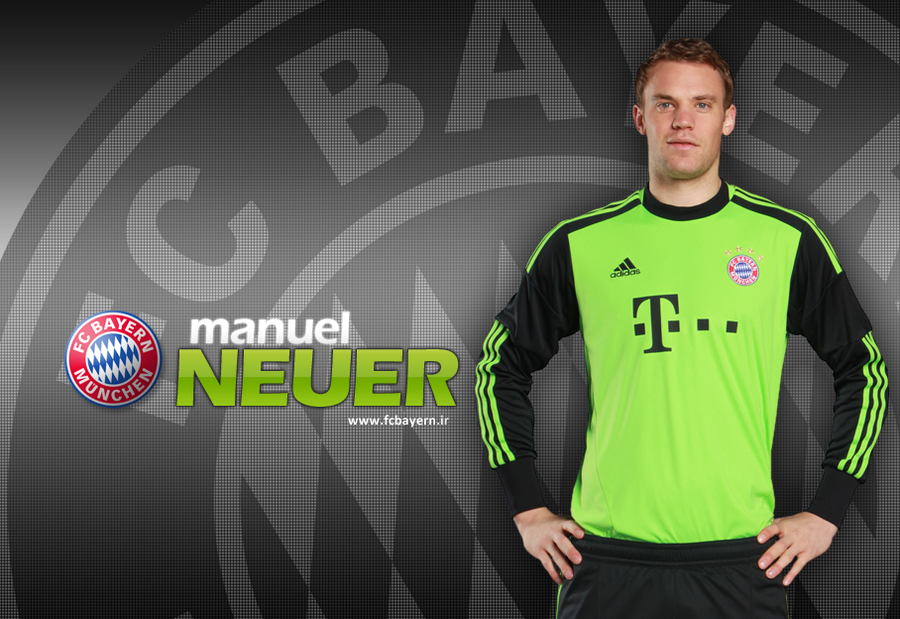
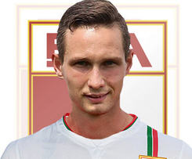

Iván Soberano Rodriguez 36 - Isai Luna Alonso 13
FC BAYER MÜNCHEN
plantel "Berlin Alemania "
M. Neuer

Manuel Peter Neuer
(Gelsenkirchen, Alemania, 27 de marzo de 1986)
es un futbolista alemán. Juega de portero y su actual club es Bayern Múnich de la Bundesliga.
Es internacional absoluto con la selección alemana desde 2009, en la que es el
u
portero titular y con la que ha disputado el Mundial de Sudáfrica 2010, la Eurocopa
2012 y el Mundial de Brasil 2014. Fue elegido por la IFFHS como Mejor Portero del
Ano en 2013 y 2014. El ano 2014, además de ganar el mundial celebrado en Brasil,
fue nombrado guante de oro del campeonato,1 y también aparece en el once ideal
del mundial Brasil 2014.
Pie de página
R.Lewandowski
Robert Lewandowski inició su carrera en el Warszawa (Varsovia), donde jugó por siete anos en categorías inferiores. Luego en el ano 2005 fichó por el Delta Varsovia, donde logró jugar en el primer equipo y anotó cuatro goles.
En la temporada 2006-2007, Lewandowski fue el máximo artillero de la II Liga, donde anotó un total de 15 goles, ayudando al Znicz Pruszków conseguir el ascenso a la I Liga. En la siguiente temporada fue el máximo anotador de la I Liga, logrando anotar un total de 21 goles, esto lo llevó a ser de interés para uno de los clubes históricos de Polonia, el Lech Poznań.
Pie de página
P. Lahm
Philipp Lahm
(pronunciación en alemán /ˈfɪlɪp ˈlaːm/, Múnich, Baviera, Alemania, 11 de noviembre de 1983) es un futbolista alemán que juega como lateral derecho o mediocentro defensivo en el Bayern Múnich. Fue internacional absoluto con la selección alemana entre 2004 y 2014, capitaneándola hasta la Copa Mundial de 2014, donde finalizaron como campeones. También es capitán del Bayern Múnich, con el cual ha ganado múltiples títulos incluyendo la Liga de Campeones de la UEFA 2012-13 como parte del triplete.
Es considerado por muchos como uno de los mejores laterales derecho de su generación,3 y fue incluido en el equipo del torneo de la Copa Mundial en 2006, 2010 y 2014, en el equipo ideal de la Eurocopa en 2008 y 2012 y en el Equipo del ano UEFA en 2006, 2008, 2012, 2013 y 2014. A pesar de que es diestro, es capaz de jugar en ambos lados de la cancha.
Pie de página
D. Alaba
Alaba
comenzó su carrera en el SV Aspern, el club de su barrio, en el distrito 22 de Donaustadt. Luego, fue descubierto a los diez anos por un ojeador del Austria Viena mientras jugaba en una playa del Mar Tirreno con sus amigos. A partir de allí, se unió a la cantera del Austria Viena a su corta edad. Ascendió rápidamente, y en abril de 2008 fue llamado por el banquillo del primer equipo para un partido de la Bundesliga. También jugó cinco veces para el equipo de reserva del Austria de Viena, antes de salir en el verano de 2008 a unirse a la Bundesliga alemana con el Bayern de Múnich.
Comenzó en la cantera del Bayern, jugando para la sección sub-17 y sub-19, antes de ser promovido al equipo de reserva para la temporada 2009-10. Hizo su debut en un partido de Liga contra el Dinamo de Dresde en agosto de 2009 y consiguió anotar su primer gol como profesional en el FC Bayern de Múnich II el 29 de agosto 2009. Desde el 2011 forma parte de la plantilla del Bayern de Múnich.
Pie de página
J. Boateng
Jérôme Agyenim Boateng
(Berlín; 3 de septiembre de 1988) es un futbolista alemán de origen ghanés, es el hermano menor del también jugador de fútbol Kevin-Prince Boateng (que juega en la selección de fútbol de Ghana). Jérôme juega de defensor y en la actualidad juega en el Bayern de Múnich de la Bundesliga de Alemania.
Juega como defensor central. Es un futbolista con doble nacionalidad: ghanesa y alemana.1 Tiene un físico privilegiado y suficiente versatilidad para jugar en cualquier posición del fondo. Empezó su carrera jugando para el club juvenil de Tennis Borussia Berlin.
Pie de página
F. Ribéry
Franck Henry Pierre Ribéry
(Boulogne-sur-Mer, 7 de abril de 1983), o Mohamed Yassin Ribéry), después de su conversión al islam, en 2006 1 es un futbolista francés que juega como volante por banda, comúnmente por la izquierda, en el Bayern Múnich de la Bundesliga de Alemania.
Debutó como profesional en agosto de 2001 con el Union Sportive de Boulogne de su ciudad natal,2 equipo con el que ya jugó cuatro partidos en su primera temporada en el fútbol amateur.3 En temporadas posteriores, jugó en el Olympique Alès, el Stade Brestois 29 y el Football Club de Metz donde fue comparado en sus inicios con otra estrella formada en el club, Robert Pirès.
En enero del 2005 fue traspasado al Galatasaray de Turquía, llenando su trayectoria en el país turco con algún que otro altercado policial y delictivo, aunque ayudó a vencer en la Copa de Turquía de 2005, gracias a un gol crucial en las semifinales. Sin embargo, en junio de ese ano abandonó el club para unirse al Olympique de Marsella. El club turco recurrió el traspaso a la FIFA, causa que fue decidida finalmente en favor del jugador por el Tribunal de Arbitraje Deportivos (TAS) en abril de 2007.
Pie de página
Thiago
Thiago Alcántara do Nascimento, más conocido como Thiago (San Pietro Vernotico, Brindisi, Italia, 11 de abril de 1991)2 3 es un futbolista espanol que también cuenta con la nacionalidad brasilena.4 Actualmente juega en el F. C. Bayern Múnich de la Bundesliga.
Se trata de un centrocampista de corte ofensivo con mucha personalidad y con un gran repertorio técnico.5 6 Es hijo del exfutbolista Mazinho y hermano mayor del también futbolista Rafa Alcántara ("Rafinha"), es primo segundo del Delantero Rodrigo Moreno
Thiago es hijo de Mazinho, exfutbolista campeón del mundo con Brasil, y de Valéria Alcántara, exjugadora de voleibol.7
Nació en el municipio italiano de San Pietro Vernotico, en el hospital donde trabaja el doctor Palaia, quien es médico social del US Lecce donde jugaba el padre de Thiago por entonces.
Pie de página
M. Götze
Mario Götze
(Memmingen, Alemania; 3 de junio de 1992) es un futbolista alemán juega de mediapunta en el Bayern Múnich de la Bundesliga de Alemania y en la Selección Alemana.
Fue seleccionado por primera vez para la Selección Alemana en 2010, a la edad de 18. Fue incluido en la lista de convocados para la Eurocopa 2012 y, dos anos más tarde, marcó el gol de la victoria en la final de la Copa Mundial de 2014.6 Jugó para Borussia Dortmund entre 2009 y 2013, ganando el título de la Bundesliga en la temporada 2010-11 y el doblete de la Bundesliga y la DFB-Pokal en la temporada 2011-12, y fue parte del equipo que llegó a la Final de la Champions League 2012/2013. En abril de 2013, fue fichado por 37 millones de euros por el Bayern Múnich pagando su cláusula de rescisión, convirtiéndolo en el segundo jugador alemán más caro hasta la fecha, por detrás de Mesut Özil.
Pie de página
FC AUGSBURG
plantel "Berlin Alemania "
Alexander Manninger
Alexander Manninger
(Salzburgo, Austria, 4 de junio de 1977)
Es un futbolista austríaco.1 Juega de guardameta
y su equipo actual es el F. C. Augsburgo de la
Bundesliga de Alemania
Pie de página
Ronny Philp
Ronny Philp
(Sibiu, Rumania, 28 de enero de 1989)
Futbolista alemán, de origen rumano.
Juega de defensa y su actual equipo es
el F. C. Augsburgo de la Bundesliga de Alemania.
Pie de página
Ragnar Klavan
Ragnar Klavan
(Viljandi, Estonia, 30 de octubre de 1985)
es un futbolista estonio que juega como
defensa en el SD Eibar de la Liga BBVA
de Espana. También se desempena como
capitán de la selección de fútbol de Estonia.
Pie de página
Halil Altintop
Halil Altıntop
(Gelsenkirchen, Alemania, 8 de diciembre de 1982)
Es un futbolista de origen turco,
hermano gemelo de Hamit Altıntop.
Actualmente juega en el F. C. Augsburgo.
Pie de página
Markus Feulner

Markus Feulner
(12 de febrero de 1982)
Es un futbolista alemán, se desempena
como volante izquierdo y actualmente
juega en el FC Augsburg.
Pie de página
Shawn Parker
Shawn Parker
(n. Wiesbaden, Alemania, el 7 de marzo de 1993)
Es un futbolista germano-estadounidense.1
Juega de delantero y su equipo actual es
el F.C. Augsburgo de la 1. Bundesliga
alemana. A nivel internacional, Parker
ha representado a la selección Alemana en
varios niveles, desde sub-15 hasta el sub-21.
Pie de página
Paul Verhaegh
Paul Verhaegh
(Kronenberg, Países Bajos, 1 de septiembre de 1983)
Futbolista neerlandés. Juega de defensa
y su actual equipo es el FC Augsburgo de
la Bundesliga de Alemania.
Pie de página
Ji Dong-Won
Ji Dong-Won
(28 de mayo de 1991, Jeju, Jeju-do, Corea del Sur)
Es un futbolista surcoreano.
Juega de delantero y su equipo
actual es el FC Augsburgo de la
1. Bundesliga de Alemania.
Pie de página
Tim Matavž

Tim Matavž
(nacido el 13 de enero de 1989, en Sempeter pri Gorici; Eslovenia)
es un futbolista esloveno.
Juega como delantero y su
actual club es el Augsburgo
de la Bundesliga.
Pie de página
Raúl Bobadilla
Raúl Marcelo Bobadilla
(Ciudad de Formosa, 18 de junio de 1987)
Es un futbolista argentino nacionalizado
Paraguayo. Actualmente juega como delantero
para el F. C. Augsburgo de la Bundesliga
alemana
Pie de página
BORUSSIA DORTMUND
plantel "Berlin Alemania "
Roman Weidenfeller
Roman Weidenfeller
(Diez, Alemania, 6 de agosto de 1980) es un futbolista alemán. Juega como portero en el Borussia Dortmund de la Bundesliga y en la selección alemana.
Se formó como futbolista en las categorías inferiores del FC Kaiserslautern, desde donde pasó en el ano 2002 a las filas del Borussia Dortmund. Ha sido internacional por la selección de Alemania en la categoría Sub-17 y en la absoluta. Tuvo uno de los picos de su carrera en la temporada 2012/13, especialmente en la UEFA Champions League, donde se convirtió en una de las estrellas de la competición.
Pie de página
Neven Subotić
Nacido en una pequena localidad junto a Banja Luka, en la antigua Yugoslavia, y de padres serbios, a los cinco anos se trasladó con su familia a la ciudad de Schömberg, en Alemania.1 2 Comenzó a jugar al fútbol a los 7 anos, en el equipo local, el TSV Schwarzenberg.3
En los anos 1990 caducó el permiso de residencia en Alemania de su familia, y estos se trasladaron en 1999 a los Estados Unidos, concretamente a Salt Lake City, donde el padre de Neven tenía un primo.4 Dos anos después, la familia se trasladó de nuevo, esta vez a Bradenton, Florida, con el fin de que su hermana Natalija pudiera asistir a una importante academia de tenis. Neven fue observado por técnicos de la Selección de Estados Unidos sub-17, y comenzó a jugar con el equipo de la University of South Florida.
Jugando en los Países Bajos con el equipo Sub-17 de Estados Unidos, fue observado por ojeadores del equipo alemán del 1. FSV Mainz 05, que le sometieron a una prueba. Tras causar una excelente impresión a éstos, fue contratado por el equipo para sus categorías inferiores.
Pie de página
Marian Sarr
Tuvo su inicio en el fútbol en 1999 jugando en el SV Leithe. Creció como futbolista en la cantera del Bayer Leverkusen, jugando para el Bayer Leverkusen II en la temporada 2012/2013 en la Regionalliga. Tras la temporada 2012/2013 fichó por el Borussia Dortmund para jugar en el juvenil sub-19. Sarr dio el salto al Borussia Dortmund II el 20 de julio de 2012 haciendo su debut oficial en la primera jornada de la temporada 2013/2014 frente al VfB Stuttgart II.
En la temporada 2013/2014, Jürgen Klopp eligió a Sarr para jugar con el primer equipo. Su debut con el Borussia Dortmund se dio el 11 de diciembre de 2013 en un partido de UEFA Champion's League contra el Olympique de Marsella. Su debut en la Bundesliga se produjo el 14 de diciembre de 2013 frente al Hoffenheim.
Pie de página
Matthias Ginter
Ginter comenzó su carrera en SV March, antes de trasladarse a la selección juvenil de SC Freiburg para la temporada 2005-06. Con el equipo de A-juvenil, ganó el junior DFB-Pokal.
En enero de 2012, Ginter entrenó con el primer equipo del Freiburg debe, en parte, a la pérdida de varios jugadores de la plantilla durante el mercado de invierno. El 21 de enero 2012 Ginter hizo su debut profesional cuando fue sustituido en el Anton Putsila en el minuto 70 contra sus companeros luchadores del descenso el FC Augsburg. En el minuto 88 del partido, anotó el gol de la victoria de un tiro libre por Michael Lumb para su equipo en la victoria por 1-0. El objetivo, que se produjo dos días después de cumplir 18 anos de Ginter,es que fue el goleador más joven de la Bundesliga SCF hecho en la historia del club. El registro se llevó a cabo con anterioridad por Dennis Aogo.
Pie de página
Marcel Schmelzer
Marcel Schmelzer (Magdeburgo, 22 de enero de 1988) es un futbolista alemán que juega como lateral izquierdo en el Borussia Dortmund.
Schmelzer fue llamado por el seleccionador nacional sub-21 para el Europeo de 2009, en el que participó con regularidad, aunque no como titular.
El 8 de mayo de 2014, Schmelzer fue incluido en la lista preliminar de 30 jugadores por el entrenador Joachim Löw con miras a la fase final del torneo en Brasil.
Pie de página
Erik Durm
Durm empezó su carrera en 1998 en la cantera del SG Rieschweiler, después se unió a la cantera del 1. FC Saarbrücken en 2008, equipo en el que fue el máximo anotador de la liga 2009-2010 con 13 goles. En julio de 2010, Durm fue traspasado a la cantera del 1. FSV Mainz 05, debutando con el filial en la temporada 2010-2011 el 4 de diciembre de 2010 frente al SV Elversberg en la Regionalliga. En la temporada 2011-2012, Durm se aifanzó en el filial del 1. FSV Mainz 05 y consiguió anotar siete tantos en sus diez primeros partidos. El joven alemán logró marcar dos goles como visitante en la jornada siete frente al Eintracht Frankfurt. Acabó la primera vuelta de la temporada anotando nueve goles, y aún anotó cuatro goles más en la segunda vuelta de la temporada 2011-2012. Tras esta temporada, FSV Mainz 05 y Borussia Dortmund ofrecieron a Durm firmar un contrato profesional,1 pero durm rechazó la oferta del Mainz por fichar con el Borussia.
Pie de página
Sven Bender
Sven Bender (Rosenheim, Alemania, 27 de abril de 1989) es un futbolista alemán. Juega de mediocampista y su equipo actual es el Borussia Dortmund de la Bundesliga de Alemania.
Es el hermano gemelo del futbolista del Bayer 04 Leverkusen, Lars Bender. Tal como su hermano, el jugador es patrocinado por Adidas
Pie de página
HAMBURGER SV
plantel "Berlin Alemania "
HANNOVER 96
plantel "Berlin Alemania "